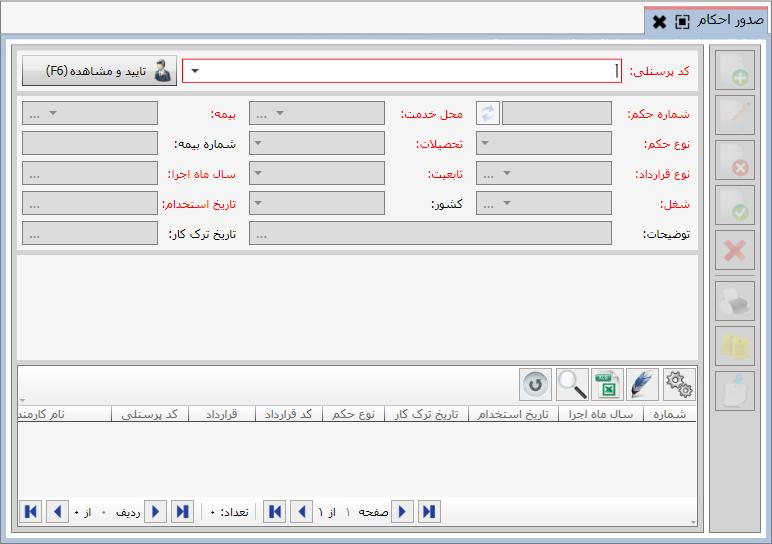
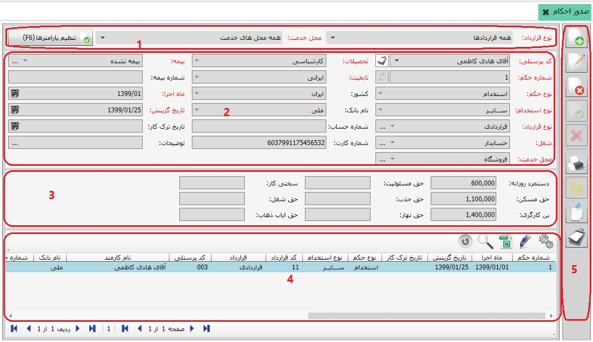

پس از معرفی کارمندان به سیستم حقوق و دستمزد، برای اینکه بتوانید برای هر یک از کارمندان عملیاتی از قبیل پرداخت وام، پرداخت مساعده، محاسبه حقوق و ... انجام دهید، باید برای آن ها در سیستم احکامی صادر نمایید. احکام حقوق و دستمزد شامل استخدام، متمم و پایان کار می باشد که بر حسب نیاز برای هر یک از کارمندان صادر می شود. برای دسترسی به این صفحه، از بخش «عملیات روزانه» روی منوی «صدور احکام» کلیک کنید تا صفحه مربوط به آن باز شود:
در ابتدا صفحه صدور احکام به صورت شکل بالا نمایش داده می شود. در فیلد کد پرسنلی لیست کارمندان معرفی شده به سیستم قرار گرفته است که با انتخاب نام هر یک از کارمندان و انتخاب گزینه می توانید احکام صادر شده برای آن شخص را مشاهده و یا در صورت نیاز برای وی حکم صادر نمایید. در شکل زیر نام یکی از کارمندان انتخاب شده و در جدول پایین صفحه احکام مربوط به آن شخص نمایش داده شده است:
صفحه صدور احکام با پنج قسمت مشخص شده است که هر قسمت را به صورت جداگانه شرح می دهیم:
کادر شماره 1: در این قسمت می توانید نوع قرارداد و محل خدمت مورد نظرتان را تعیین کنید.
کادر شماره 2: در این قسمت اطلاعات اولیه جهت صدور حکم وارد می شود.
کادر شماره 3: عوامل قرارداد مربوط به حکم انتخاب شده در این قسمت نمایش داده می شود. این عوامل و مقادیر آن ها بسته به نوع قرارداد انتخاب شده برای هر حکم ممکن است متفاوت باشد.
کادر شماره 4: همان طور که گفته شد در جدول شماره ی 4 لیست احکام صادر شده برای کارمند انتخاب شده نمایش داده می شود.
کادر شماره 5: این قسمت نیز شامل ابزاری است که برای انجام عملیاتی همچون ایجاد، ویرایش، حذف و ... در مورد احکام به کار می رود.